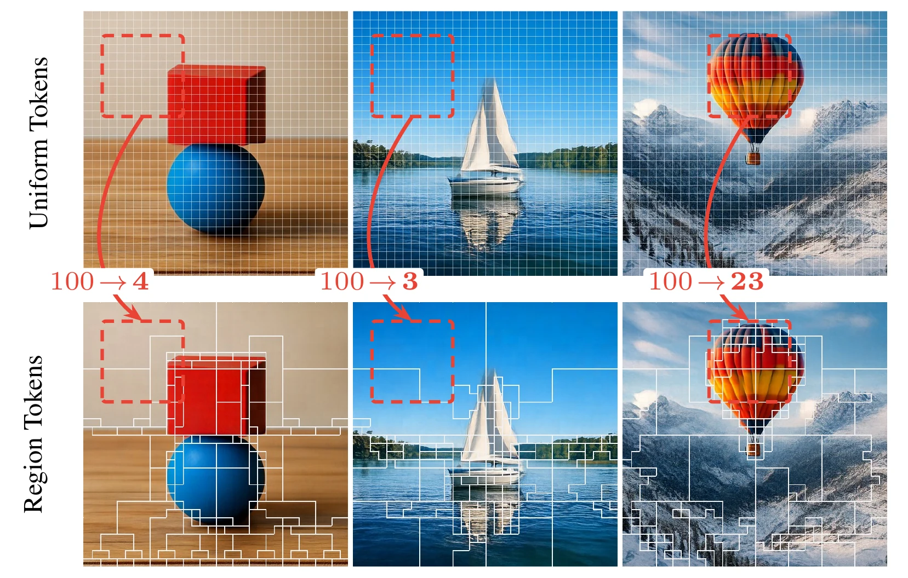
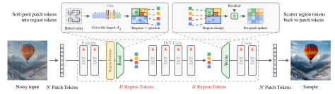

A pretrained diffusion transformer spends one token on every patch, in
every layer and at every step. We keep the first and last blocks dense and run the middle
on a few hundred content-sized region tokens: large over flat areas, single patches
over detail.
We cut a Hilbert ordering of the patch tokens where the model's own
features change most, so grouping in two dimensions becomes cutting a line in one. A learned Read pools each run into one token carrying its size and position, and a
learned Write returns the core's update to its patch tokens. The backbone stays frozen apart
from low-rank adapters, and the region count is drawn at random while fine-tuning, so
one checkpoint runs at every budget, 1024 tokens down to 64. On half the tokens,
RTI holds the frozen model's quality at 2.11× the speed.

Content-adaptive tokenization. The same three images under a uniform
grid (top) and our partition (bottom). Each arrow reports how many region tokens cover
the area where the grid spends about a hundred patch tokens: 4 over a plain backdrop
and 3 over empty sky, but 23 over the balloon, where the detail is. Size
follows content in both directions. The overlays compare tokenizations, not
outputs.
Select a prompt and use the slider to set the compression rate. The
middle column is one RTI checkpoint queried at five budgets. The right column is feature-similarity merging, the
strongest prior reduction, at the same budgets and the same speed. The
left column never changes: it is the frozen backbone at all 1024 patch tokens.
Prompt
Showing
Dense1024 / 1024 · 1.00×
RTI (ours)
Feat Sim
cropdense
crop
crop
Click any sample to move the crop ·
The dense backbone runs on all 1024 patch tokens; every other
setting is that sequence cut to the length shown. Dropping a quarter of it, 768 of
1024, leaves the image essentially unchanged. Both reductions run inside the same
interface, so the only difference between the two right-hand columns is the rule that
forms the groups. Measured speedups are in the results section below.
02
The partition on the trajectory
Every video: 100 sampling steps
The partition is not fixed: we rebuild it from the model's own features
at every step, so it tracks the image as the image appears. Early on there is nothing to
track and the regions are large everywhere; as detail forms, the cuts crowd into it and
the flat parts of the frame stay in a handful of tokens.
PromptBudget
Current image estimateThe same estimate, region boundaries drawn
Left: the model's running estimate of the clean image. Right: the same
frame with the boundaries of the regions the core is running on. Same sampler, seed and
prompt as the gallery above.
02b
Contiguous, or scattered
Same prompt · same seed · R = 512
Both methods turn the 1024 patch tokens into 512 tokens, two patches
each on average; they differ in which patches each token is built from. We mark six grid
positions — the same six on both sides — and paint the whole group that each one belongs
to.
Ours are connected: a group covers one place, wide where the image is
flat and down to a single patch where it is not. Similarity merging chooses members by
appearance alone, so one group collects patches from opposite corners of the frame. Its
token stands nowhere in particular, and the pretrained rotary attention is left with no
position to read for it.
Prompt
Columns: the sample, then its six marked groupsRows: RTI (ours) on top, Feat Sim below
Measured over 64 prompts at R = 256: a patch sits 0.5 grid cells
from its group's centre under our partition, 5.2 under similarity merging,
against 12.2 for a random assignment.
02c
One checkpoint, every budget
Partition swept at a fixed step
We cut the Hilbert order at the largest feature gaps, so the cut sets
are nested: lowering R only ever merges neighbouring
regions, and one trained checkpoint serves every setting.
We hold the image fixed and sweep the budget from R = 1024 down to
R = 32 and back. Carved stone and feather barbs hold their cuts longest; flat
ground and blank wall merge first.
03
Method
Region Token Interface
We probe the frozen MiniT2I[1]-B/16
before any training. Three measurements
each fix one design choice. Detail is concentrated in space, so regions must be sized by
content (a). The representation grows more poolable as the image forms, so the partition
is rebuilt at every step (b). The redundancy sits in the middle blocks, so only those are
compressed (c).
a · Space
Detail is concentrated
The most-detailed 15% of patches hold half of the detail; half of them hold 88%.
b · Time
More poolable as the image forms
c · Depth
Poolable in the core, sensitive at the ends
Representation retained = explained variance of a middle block's tokens
after pooling the N=1024 patch tokens to R=256 and scattering back. Adaptive is our
partition, uniform is the equal-length cut of the same order, skip drops tokens instead
of pooling them. Panel (c) is why the first three and last four blocks stay dense.
03b
Four properties of the grouping
And what each prior reduction gives up
We measure the effect of coarsening the token
grid on the frozen model to investigate the redundancy, and the measurements fix four
properties a reduction must keep. Redundant patches lie next to one another in flat
stretches of the frame, so groups must be contiguous. In natural images detail
concentrates in a small part of the frame, so group size must follow the content,
large over a flat wall and small over foliage. A group covers a definite place that its
token has to stand for, so each must carry a position. And dropping loses what
pooling keeps, so the redundant content must be summarized rather than deleted.
Each prior reduction forfeits at least one of the four, and each is worst
precisely where it does. Token Skip[3] routes the most important patch tokens through a
block and lets the rest bypass it: its units are single patch tokens, connected and positioned
by construction, but what bypasses is deleted, not summarized. Feature-similarity
merging[4][5] pools patches that look alike regardless of where they are, so a group can
gather patches from opposite corners of the frame; its token stands nowhere in particular,
losing contiguity and position at once. A latent array[6][7] replaces grouping with
R free latents that read the whole frame by cross-attention, giving up grouping and
position together.
GenEval on MiniT2I-B/16 at matched budget, with the difference to RTI.
(✓) holds only trivially: Token Skip never groups, so each unit is a single patch
token, connected and positioned by itself, while the admitted set scatters across
the frame and nothing stands for the patches that bypass. It is also scored at its own
operating point, 576 mean tokens at 1.19×, against RTI at 256 and 2.15×, so its
difference understates the gap.
R learned latents read every patch token by cross-attention
✗
✗
✗
✓
45.7
−39.0
Removing position costs an order of magnitude more than anything
else.
03c
The interface
Cut, Read, core, Write

An elastic region-token interface. The first and last blocks keep
all N patch tokens. The core between them runs on R ≪ N region
tokens. Left inset: cuts at the R−1 largest feature gaps along the
Hilbert order give the regions; Read pools each into one token carrying its size and
position. Right inset: Write returns each region token's change to its patch
tokens, specialised per token by a learned map g. Grey: LoRA. Green: the interface.
From an order to regions
MiniT2I[1] takes a 512² image as a 32×32 grid of
N = 1024 patch tokens and
follows the JiT[2] convention of predicting the clean image instead of the noise
or the velocity, so its features track image structure. A Hilbert curve[9] visits every
patch of that grid exactly once, and consecutive positions along it are always
neighbours in the image. Any contiguous run of the order is therefore a connected
region, and grouping in two dimensions becomes cutting a line in one.
Each boundary along the curve is scored by the feature difference across it:
dj = ‖ hπ(j+1) − hπ(j) ‖2
This is a first difference along the curve, an edge detector at patch resolution on
mid-trunk features rather than on pixels. We cut at the R−1 largest scores:
homogeneous stretches stay merged, detailed areas split down to single patches.
The rule has no parameters and costs one pass over the sequence, cheap enough to
recompute at every sampling step, so the partition follows the image as it forms.
Read: patch tokens into a region token
A region token is a learned weighted average of the region's patch tokens, plus
an embedding of the region's size:
The softmax runs within the region, so Read can put its weight on a region's
informative tokens instead of averaging blindly, and the size embedding tells the core
whether a token stands for one patch or sixteen. The token's position is the average of
its member tokens' rotary embeddings. Those are unit phasors, so the average survives at
wavelengths longer than the region and shrinks below it: position is sharp for one
patch and coarse for a large region, which is what a token covering an area needs.
Write: the update back to the patch tokens
After the core, a region's token has changed by z′c − zc.
Write adds that change to each patch token as a residual on its pre-core features,
with a small learned map g conditioning the update on the token itself:
hj ← hj + g( [ hj ‖ z′c(j) − zc(j) ] )
Tokens in one region therefore receive individual updates rather than one shared
copy. And because every patch token keeps its pre-core features, the core's work
arrives as a correction on top of them, which is how the coda still produces per-pixel
output although the core never saw individual patch tokens.
Core span and fine-tuning
The core is the contiguous span of middle blocks where the depth probe puts the
redundancy, 3–13 of 17 on B/16 and 3–19 of 23 on L/16; the prelude and coda stay at
full resolution. Its extent trades against its width: a longer core must run on more
region tokens to hold the same quality, a shorter one needs fewer, and at
matched compute the two are equivalent. The probe fixes where the span sits, not a
unique length.
The trunk stays frozen. We train only LoRA[10]
adapters and the Read/Write parameters, on MiniT2I's own fine-tuning data and
settings. Both are initialised to exact mean-pool and broadcast, so training starts
from the frozen model's own behaviour. We draw the budget R at each step from
{64, 128, 256, 512}, so one checkpoint covers the range.
RTI at R=256 (14.71) beats Feat Sim at
R=512 (19.99): better images at half the tokens and a higher speedup.
Text-to-image benchmarks. GenEval[12] measures compositional accuracy; CLIP[14],
PickScore[15] and ImageReward[16] measure alignment and preference, over PartiPrompts[13]. Speedups are wall-clock
on one RTX 4090. Token Skip sets a capacity rather than a budget, so 576 is its
derived mean image-token count per core block.
At B/16 and R=512, RTI scores above its own dense backbone on
GenEval (87.8 vs 87.2) while running 1.84× faster. CLIPScore is the one metric where Feat
Sim leads at R=512; it is also the least discriminative of the four, and RTI leads
on GenEval, PickScore and ImageReward.
MJHQ-30K FID on MiniT2I-L/16. FID is the one metric where RTI does not hold
dense quality: it recovers most of the reduction's cost. The gap to similarity
merging is also widest here.
Method
R
FID ↓
vs. dense
Speedup
Dense backbone
1024
9.07
—
1.00×
RTI (ours)
512
11.43
+2.36
2.11×
Feat Sim
512
19.99
+10.92
2.11×
RTI (ours)
256
14.71
+5.64
2.59×
Feat Sim
256
28.02
+18.95
2.59×
05
Ablations
The order · the step trade-off · a second task
The choice of order
Contiguity is a property of the order, so we swapped it and
retrained. Raster order cuts row strips that wrap at row ends; Morton keeps dyadic
cells together but jumps diagonally; only Hilbert steps to a neighbour every time. At
R=128 the ranking is the one locality predicts, raster worst and Hilbert best,
and it widens at R=64. At R=256 all three sit inside noise, because with
that many regions even a bad order cuts short runs.
Budget against steps
A region budget and fewer sampling steps both buy speed, and they do
not compose. Below about 5 seconds an image the budget is the better purchase: at
1.8 s, 82.7 GenEval against 65.9 for the dense model run with fewer steps. Above it
the ordering reverses. The results table reports the quality-matched point, not the
compute-optimal one.
Class-conditional transfer
We apply the same interface to a frozen pixel-space
JiT[2]-L/16 on ImageNet-256, with no text stream and the partition read from its features unchanged.
RTI leads feature-similarity merging at every budget on both FID and Inception Score.
The gap is largest at the middle budget and narrows at both ends: at R=193
little is reduced, at R=64 both methods degrade.
ImageNet-256, 50K samples, cfg 3.0, 50 steps. Inception Score follows
the same ordering, 313.5 / 303.8 / 253.0 against 291.6 / 252.8 / 229.2.
torch-fidelity protocol, not comparable to the MJHQ numbers above.
R
RTI FID ↓
Feat Sim
Δ
193
2.42
2.73
−0.30
130
2.69
4.53
−1.83
64
4.71
6.28
−1.57
06
Where it breaks
R = 128 and R = 64 · L/16
Below R=256 the budget costs quality: on L/16, GenEval falls from
86.3 at R=256 to 80.3 at 128 and 69.1 at 64. The layout survives; lettering goes
first, then fine geometry. Feature-similarity merging degrades further at both
settings.
Speed stops improving over the same range. Only the image tokens inside
the core shrink, while the dense prelude, the coda and the full-length text stream run
unchanged, so the speedup saturates near 3× and halving the budget from 128 to 64 buys
only 0.15×. Applying the same interface to the text stream is future work.
BudgetPrompt
Dense backboneN = 1024
RTI (ours)
Feat Sim
06b
Style and identity preservation
One RTI checkpoint · same prompt · same seed
A shorter sequence does not blur the dense image, it re-runs the whole
trajectory. The sampler can therefore land on a different sample rather than a coarser one,
and identity, count and style can all move with the budget. What decides whether they do is
the prompt.
Top row: the prompt names a robot and a lab but not a style. The model
renders a photoreal robot at 1024 tokens, a flat cartoon at 728, and a photoreal robot
again at 512 and below. The style is not a monotone function of the budget; it is a mode
the sampler picks, and one budget in the range picks a different one. Middle and bottom: the same subject and seed with the style stated in the
prompt, once as a photograph and once as a vector cartoon. Both hold their style at every
budget down to 64. Detail still degrades — the lettering breaks first, as everywhere else
— but the register does not move.
The same effect is milder elsewhere: the crowd in the Tokyo scene goes
from three figures to five to two, and the cathedral's rose window fades at 256 while its
floor pattern survives. Subjects with one strong reading, like the marble statue, keep
their identity down to 128. Naming the style is the cheapest way to pin it.
✳
Acknowledgements
We thank the authors of
MiniT2I[1]
and JiT[2]
for open-sourcing their code and pretrained checkpoints. Every result here starts from
those models; we train only LoRA adapters and the Read/Write interface on top of them.
The MiniT2I and JiT code releases are MIT-licensed, and so are our code
and checkpoints. The datasets keep their own terms: BLIP3o-60k and ShareGPT-4o-Image are
Apache-2.0 and the DALL·E 3 set is CC0-1.0, while the CC12M recaption release is
CC BY-SA 4.0 and ImageNet is released under its own non-commercial research terms.
Those last two are the ones to read before any commercial use.
Every prompt behind a figure in the paper or a
visual on this page — 85 of them, grouped by figure, with the file each is read from — is
listed in PROMPTS.md.
✳
References
X. Wang, H. Zhao, Y. Lu, K. Zhou, L. Ma, K. He.
MiniT2I: A Minimalist Baseline for Text-to-Image Generation. 2026.
blog
T. Li, K. He. Back to Basics: Let Denoising Generative Models Denoise.
2026. arXiv:2511.13720
D. Raposo, S. Ritter, B. Richards, T. Lillicrap, P. C. Humphreys, A. Santoro.
Mixture-of-Depths: Dynamically Allocating Compute in Transformer-based Language
Models. 2024.
arXiv:2404.02258
— Token Skip
D. Bolya, C.-Y. Fu, X. Dai, P. Zhang, C. Feichtenhofer, J. Hoffman.
Token Merging: Your ViT But Faster. ICLR 2023.
arXiv:2210.09461
— Feat Sim
D. Bolya, J. Hoffman. Token Merging for Fast Stable Diffusion.
CVPR Workshops 2023. — Feat Sim, diffusion
A. Jaegle, S. Borgeaud, J.-B. Alayrac, C. Doersch, C. Ionescu, D. Ding et al.
Perceiver IO: A General Architecture for Structured Inputs & Outputs.
ICLR 2022.
arXiv:2107.14795
— Latent Array
A. Jabri, D. J. Fleet, T. Chen. Scalable Adaptive Computation for
Iterative Generation. ICML 2023.
arXiv:2212.11972
— Latent Array, RIN
M. Haji-Ali, W. Menapace, I. Skorokhodov, D. Park, A. Kag, M. Vasilkovsky,
S. Tulyakov, V. Ordonez, A. Siarohin. One Model, Many Budgets: Elastic Latent
Interfaces for Diffusion Transformers. 2026.
arXiv:2603.12245
D. Hilbert. Über die stetige Abbildung einer Linie auf ein
Flächenstück. Mathematische Annalen 38:459–460, 1891.
E. J. Hu, Y. Shen, P. Wallis, Z. Allen-Zhu, Y. Li, S. Wang, L. Wang, W. Chen.
LoRA: Low-Rank Adaptation of Large Language Models. ICLR 2022.
arXiv:2106.09685
J. Geiping, S. McLeish, N. Jain, J. Kirchenbauer, S. Singh, B. R. Bartoldson
et al. Scaling up Test-Time Compute with Latent Reasoning: A Recurrent Depth
Approach. 2025.
arXiv:2502.05171
— prelude / core / coda
D. Ghosh, H. Hajishirzi, L. Schmidt. GenEval: An Object-Focused Framework
for Evaluating Text-to-Image Alignment. NeurIPS 2023.
arXiv:2310.11513
J. Yu, Y. Xu, J. Y. Koh, T. Luong, G. Baid et al. Scaling Autoregressive
Models for Content-Rich Text-to-Image Generation. TMLR 2022.
— PartiPrompts
J. Hessel, A. Holtzman, M. Forbes, R. Le Bras, Y. Choi. CLIPScore: A
Reference-free Evaluation Metric for Image Captioning. EMNLP 2021.
Y. Kirstain, A. Polyak, U. Singer, S. Matiana, J. Penna, O. Levy.
Pick-a-Pic: An Open Dataset of User Preferences for Text-to-Image Generation.
NeurIPS 2023. — PickScore
J. Xu, X. Liu, Y. Wu, Y. Tong, Q. Li et al. ImageReward: Learning and
Evaluating Human Preferences for Text-to-Image Generation. NeurIPS 2023.
S. Changpinyo, P. Sharma, N. Ding, R. Soricut. Conceptual 12M: Pushing
Web-Scale Image-Text Pre-Training To Recognize Long-Tail Visual Concepts.
CVPR 2021. arXiv:2102.08981
— MiniT2I pretraining
J. Chen, J. Xu, W. Peng, Y. Zhang et al. BLIP3-o: A Family of Fully Open
Unified Multimodal Models. 2025.
arXiv:2505.09568
— BLIP3o-60k
J. Chen, P. Cai, Z. Chen, H. Chen, Y. Ji, X. Wang, S. Yang, B. Wang.
ShareGPT-4o-Image: Aligning Multimodal Models with GPT-4o-Level Image
Generation. 2025.
arXiv:2506.18095
J. Deng, W. Dong, R. Socher, L.-J. Li, K. Li, L. Fei-Fei. ImageNet: A
Large-Scale Hierarchical Image Database. CVPR 2009.
image-net.org
— class-conditional runs
✳
BibTeX
@misc{zamfir2026elastic,
title = {Elastic Token Compression for Pixel-Space Diffusion Transformers},
author = {Zamfir, Eduard and Reisswig, Christian and Wu, Zongwei
and Xian, Yongqin and Timofte, Radu},
year = {2026}
}